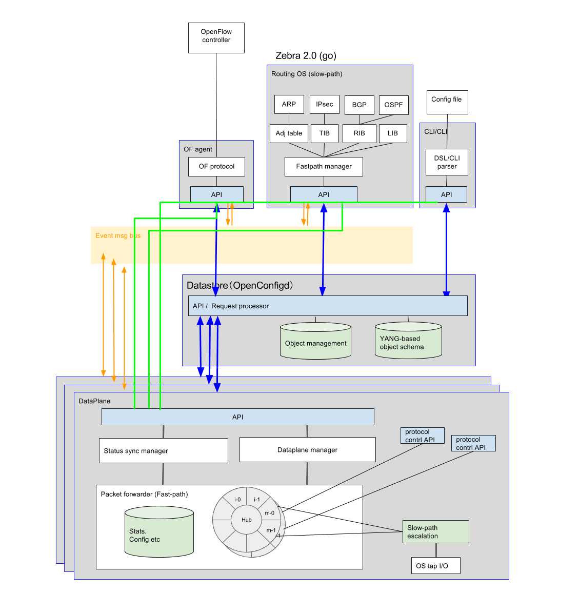

4. 次期LagopusのArchitecture¶
4.1. 全体的な方針¶
- マイクロサービス化をすすめる
- Lagopusを構成するパケット処理部，構成情報管理機構，プロトコルエージェントを疎結合で接続
- 各コンポーネントの設定の方法については全体で統一的なルールを適用することにする
- 各コンポーネントのAPI呼び出しAuthorizationが必要な場合は別途用意する
- 統一的なルール以外による設定はサポートしない
- 監視プロセスやHigh-Availability機能については外部システムで対処
- コンポーネントで異常が発生した場合は，アラートを上げそれ以外のコンポーネントは処理を継続
- Lagopusを構成するパケット処理部，構成情報管理機構，プロトコルエージェントを疎結合で接続
- プロトコル処理志向のプログラマブルなパケット処理を実現
- APIによりデータプレーンの処理フローを選択可能
- プロトコル処理制御用のAPIをプロトコルごとに提供
4.2. 改善の方針¶
- DatastoreのLagopus設定ファイル管理とObject情報管理を分離
- Lagopus設定ファイル管理: 設定情報の読み込みと永続化に特化
- Object情報管理: 各オブジェクトの情報管理と各コンポーネントへの通知処理
- データのスキーマ管理とValidationの管理
- データスキーマ情報からのAPI生成
- YANGモデルをスキーマとして活用
- Openconfigdをベースに拡張したデータモデルを定義
- 外部から指定されたあるデータベースのテーブル，カラムやセルなどへのアクセスなどをトリガーにして通知
- 設定情報についてはトランザクション処理を実現するためcurrent, nextの2面を保持
- データのスキーマ管理とValidationの管理
- 各コンポーネント間の通信や制御の疎結合化
- 各コンポーネントおける制御メッセージ処理部の導入
- 各コンポーネントにイベントレシーバとディスパッチャの導入
- 各コンポーネントの制御はAPIもしくはオブジェクト情報の通知により各コンポーネントの設定を行う
- 各コンポーネントが使用する構成情報はDatastoreのObject情報管理に登録し，値の変更をトリガーにして情報が通知
- 各コンポーネントは内部でcurrent, nextの構成情報を持ち，トランザクション処理に対応 (構成状態を二面持てない場合も考慮)
- 各コンポーネント間でのイベントメッセージ転送部の導入
- 上位のRouting OSなどに対してエスカレーションするイベントを転送する機能を導入
- Linkup/downなどのイベント通知
- 低レイテンシ，高速性，スケーラビリティの重視
- 1:Nの通信 (pub/sub系)
- 上位のRouting OSなどに対してエスカレーションするイベントを転送する機能を導入
- 機能分離と統合的なプロセス管理
- 各コンポーネントの死活監視
- 異常時に各コンポーネントレベルでプロセスの再起動が可能
- 各コンポーネントレベルでの分離
- 各コンポーネントおける制御メッセージ処理部の導入
- 各コンポーネント間の通信手段を提供
- IF設定などの制御
- 通信の信頼性重視
- 1:1の通信
- Two-phase commitベースによる分散トランザクションの実行
- Prepare phase: 設定情報のvalidation
- commit phase: 設定情報の反映
- フロー設定などの高速性
- 制御を行うためのコンポーネントやAPI接続に関する接続情報の管理
- IF設定などの制御
- Dataplaneのルータ機能への対応
- プロトコルに特化した処理を実現するために拡張
- 各プロトコルエージェントへイベントやパケットをエスカレーション機能
- エージェントからのプロトコルを意識したパケット送出機能を追加
- RIB, LIB, TIB, FIB, adjacency table管理の追加
- NATなどの機能のためにlocal key/value in-memory databaseを追加
- パケット処理instructionへのinstruction template機能の追加
- IPsec処理部とその設定APIの追加
- ステータス同期マネージメント機構の導入
- プロトコルに特化した処理を実現するために拡張
4.3. スイッチを構成する代表的なコンポーネント¶
4.3.1. Datastore¶
- 構成情報のデータベース機能
- 永続化機構
- データの変更の通知機構
- トランザクション機能
- 構成情報のデータスキーマ機能
- 制御のためのAPI接続情報管理
4.3.2. Dataplane¶
- パケット転送・処理
- プロトコルに特化したフロー検索，パケット処理
- 処理オフロードへの対応
- パケット処理パイプラインの構成管理
- カウンターや統計データのエキスポート
4.3.3. Event Message Bus¶
- 各コンポーネントから送出されるイベント通知機構
- イベント毎のpub/sub管理を行う
- 速度やスケーラビリティを重視
- 再送処理は必要ない
4.3.4. OpenFlow agent¶
- OpenFlow Protocolのエージェント機能
- OpenFlow 1.3の解釈とDataplaneへの制御
- Dataplaneからのpacket-inとControllerからのpacket-out機能
4.3.5. Routing OS¶
- プロトコル処理制御
- L2, L3, L4の制御
- APIを用いてデータプレーンを制御
- APIを用いて統計データを取得
4.4. 構成情報の設定のフローについて¶
資源の活性化や初期化などを要するシステムの構成管理などの不揮発性の情報については，Two-phase commitを基本とする． Flow-entryなどの上位のRouting OSが再設定可能な情報に対しては即時commitを行う．
構成情報の項目は以下のとおり
- Dataplaneの構成情報
- I/OやCPUの割当
- Port番号
- Agent情報
- Queue構成
- プロトコル処理パイプライン
- OpenFlowの構成情報
- Controllerの設定
- Version情報
- Routing OS接続情報
- L2, L3の制御情報
- ログの設定
4.4.1. 揮発性の設定情報について¶
即時commitを実施
- 依頼先側がエラーを依頼側に伝え，依頼側の責任で管理
4.4.2. 不揮発性の設定情報について¶
- Two-phase commitを実施
- Validationで失敗
- 依頼先側がエラーを依頼側に伝え，依頼側の責任で管理
- commitで失敗
- 依頼先側がエラーを依頼側に伝え，前の状態に戻す，softに戻せない場合には前のパラメータで初期化
- Validationで失敗
4.5. 具体的な制御の流れ¶
4.5.1. 各コンポーネントのスキーマの登録¶
- スキーマの登録
- DataplaneからDatastoreにスキーマ登録
- ClientからDatastoreにスキーマ登録
- APIの登録
- DataplaneのAPI接続の登録
- Dataplaneがbridgeに関する構成情報の変化通知に関する発行要求
- ClientへのAPI接続の登録
- Dataplaneがbridgeに関する構成情報の変化通知に関する発行要求
- データ変更の通知
- Dataplaneへbridgeに関するデータ変更を通知
- Clientへbridgeに関するデータ変更を通知
4.5.2. Bridgeの設定 (不揮発性情報の扱い)¶
- ClientからDatastoreにBridge設定のためのAPIの接続情報を問い合せ
- ClientからDatastoreに値を設定するAPIを呼び出す
- Clientから各コンポーネントに値を更新するため “validation” を実行
- Datastoreがその値をsubscribeする各コンポーネントに “notify” を実施
- Dataplaneは”notify”を受け取り，該当するオブジェクトの変更を実施
- Dataplaneは終了後Datastoreに対して正常終了をしめす”commit”を実施
- Clientはnotifyを受信したことにより設定が正常終了を検知
4.5.3. IP route情報の設定 (揮発性情報の扱い)¶
- ClientからDatastoreにIP route設定のためのAPIの接続情報を問い合せ
- ClientからDatastoreに値を設定するAPIのリファレンスを返す
- ClientからDataplaneに対し，RIB情報を設定
- Dataplaneの結果をクライアントに返す
4.5.4. 統計情報の取得 (揮発性情報の扱い)¶
- 統計情報の取得
- ClientがDatastoreに統計情報を取得するAPIの接続情報を問い合せ
- ClientがDatastoreに統計情報を取得するAPIを呼び出す
- Datastoreは内部で保持している統計情報を即座に返す
- 統計情報の更新
- StateSyncManagerがDataplaneに統計情報データの取得APIの接続情報を問い合せ
- StateSyncManagerが自律的にDataplaneに統計情報データをバルク取得する
- StateSyncManagerがその取得した統計情報データをDatastoreに設定する
- StateSyncManagerが設定した統計情報データを反映するため “Commit”